Brake Pad & Shoe Hardware
AGFF 7157 Rear Drum Spring Hardware Kit Open Bag Ranger Pinto Aerostar 86-92 New
AGFF
Fits 1986-1992 Ford Aerostar · 1974-1978 Ford Mustang II (515 listed)
$19.99
View details67 parts in Brakes & Suspension from Wagner, Lee and Big A and more, each with photos, part numbers and condition on its own page. Open a part to see every vehicle it is listed for.
67 parts
Online checkout through Square. Ships from Carbondale, PA, or pick up by confirmed appointment only. Fitment question? Message us.
AGFF
Fits 1986-1992 Ford Aerostar · 1974-1978 Ford Mustang II (515 listed)
$19.99
View details
3M-7162
Fits 1988-1991 Honda CRX · 1984-1987 Honda Civic (74 listed)
$29.99
View details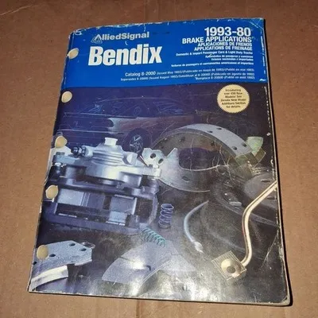
$16.99
View details
$24.99
View details
2M-7125A
Fits 1991-1994 Ford Explorer · 1983-1994 Ford Ranger (451 listed)
$29.99
View details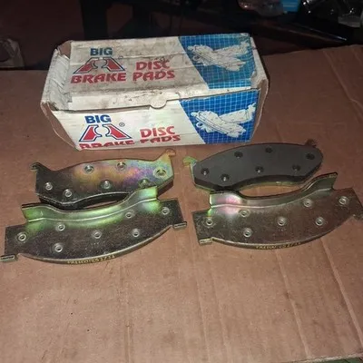
2M-7179
Fits 1981-1994 Dodge B150 · 1981-1994 Dodge B250 (912 listed)
$29.99
View details
2M-7389
Fits 1991-1993 Nissan NX · 1991-1994 Nissan Sentra (47 listed)
$29.99
View details
1-7353
Fits 1991-2003 Ford Escort · 1992-1995 Mazda MX-3 (185 listed)
$29.99
View details
1M-7265
Fits 1988-1996 Buick Regal · 1990-2001 Chevrolet Lumina (310 listed)
$29.99
View details
1M-7478
Fits 1994-1998 Ford Mustang · 1993-1997 Ford Thunderbird (80 listed)
$24.99
View details
08576
Fits 1992-1994 GMC Yukon (13 listed)
$13.99
View details
10-1518
Fits 1987 Ford Country Squire · 1972 Ford Gran Torino (564 listed)
$28.99
View details
7200
Fits 1992-2001 Ford Taurus · 1989-1997 Ford Thunderbird (268 listed)
$14.99
View details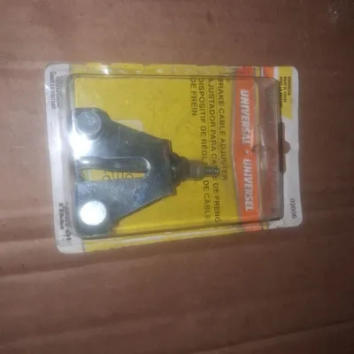
03006
$15.99
View details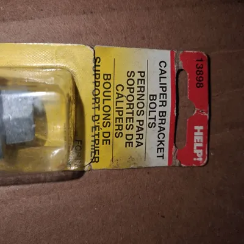
HELP 13898
Fits 1994-2014 Ford (2 listed)
$12.99
View details
15710047
Fits 1995-1997 Chevrolet S10 · 1995-1997 GMC Sonoma (74 listed)
$29.99
View details
332724
Fits 1975-1983 Chevrolet C10 · 1976-1983 Chevrolet C20 (1562 listed)
$24.99
View details
7071
Fits 1976-1996 Ford Bronco · 1975-1996 Ford F-150 (1569 listed)
$20.99
View details
7073
Fits 1982-1984 Chevrolet Cavalier · 1980-1984 Chevrolet Chevette (224 listed)
$20.99
View details
7081
Fits 1987-1990 Buick Electra · 1986-1990 Buick LeSabre (139 listed)
$19.99
View details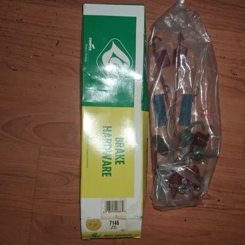
LEE-7146
Fits 1975-1991 Ford E-250 Econoline · 1975-1991 Ford E-250 Econoline Club Wagon (749 listed)
$24.99
View details
7166
Fits 1981-1987 Mercury Lynx · 1984-1994 Mercury Topaz (510 listed)
$25.99
View details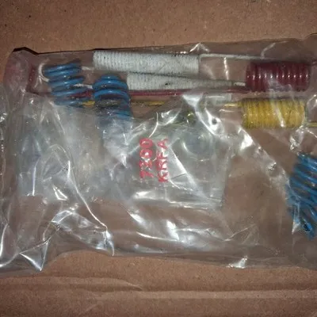
7200
Fits 1992-2001 Ford Taurus · 1989-1997 Ford Thunderbird (268 listed)
$20.99
View details
R553
Fits 1985-1998 Buick Skylark · 1985-1988 Cadillac Cimarron (821 listed)
$34.99
View details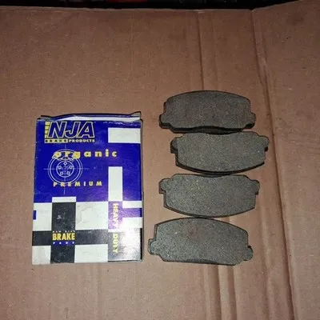
D130
Fits 1977-1981 Honda Accord (13 listed)
$22.99
View details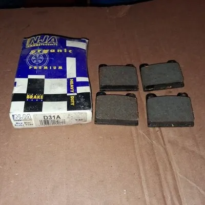
D31A
Fits 1975-1977 Alfa Romeo Alfetta · 1969-1977 Alfa Romeo Spider (50 listed)
$34.99
View details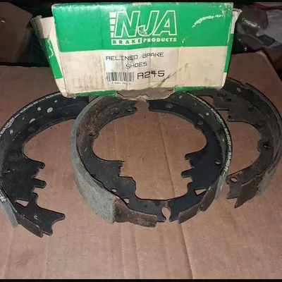
R245
Fits 1967-1981 Chevrolet Camaro · 1967-1973 Chevrolet Chevelle (808 listed)
$34.99
View details
BH177238
Fits 1987-1990 Ford Country Squire · 1980-1986 Ford LTD (354 listed)
$19.99
View details
BH177239
Fits 1987-1991 Ford Country Squire · 1992-1994 Ford Crown Victoria (421 listed)
$15.99
View details
BH177432
Fits 1981-1990 Ford Escort · 1984-1994 Ford Tempo (509 listed)
$19.99
View details
PD377M
Fits 1988-1993 Buick Regal · 1990-1993 Chevrolet Lumina (300 listed)
$24.99
View details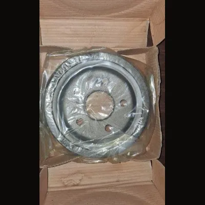
201981
Fits 1982-2002 Chevrolet Cavalier · 1990-1998 Pontiac Grand Am (801 listed)
$24.99
View details
8898
Fits 1986-1998 Buick Skylark · 1987-1996 Chevrolet Beretta (738 listed)
$39.99
View details
F110946S
Fits 1992 Chevrolet Blazer (2 listed)
$18.99
View details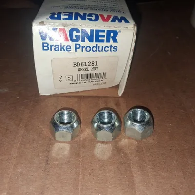
BD61281
Fits 1981-1983 AMC Concord · 1983-1989 Chrysler Fifth Avenue (50 listed)
$12.99
View details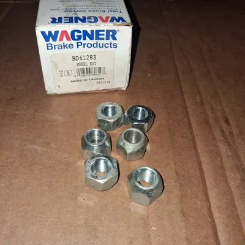
BD61283
Fits 1985-1989 Buick Century · 1981-1989 Buick Electra (316 listed)
$16.99
View details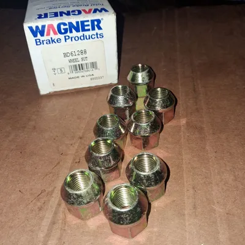
BD61288
Fits 1991-1994 Buick Commercial Chassis · 1991-1994 Buick LeSabre (15 listed)
$16.99
View details
BD61288
Fits 1991-1994 Buick Commercial Chassis · 1991-1994 Buick LeSabre (15 listed)
$24.99
View details
BD61301
Fits 1985-1988 Chevrolet Nova · 1990-1991 Chevrolet V1500 Suburban (49 listed)
$24.99
View details
BD61302
Fits 1982-1994 Buick Century · 1988-1994 Buick LeSabre (322 listed)
$12.99
View details
BD61355
Fits 1984-1988 Nissan 200SX · 1991-1994 INFINITI G20 (46 listed)
$24.99
View details
CR98670
Fits 1978-1996 Cadillac Fleetwood · 1978-1979 Cadillac Seville (390 listed)
$34.99
View details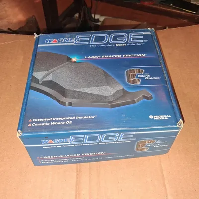
Wagner Edge
Fits Toyota Camry
$39.99
View details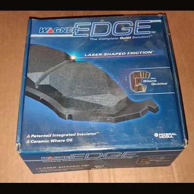
EC752A
Fits 2004-2005 Chevrolet Classic · 1997-2003 Chevrolet Malibu (171 listed)
$39.99
View details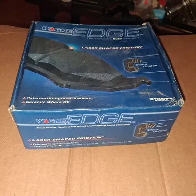
EX369
Fits 1990-2002 Chevrolet Astro · 1988-1999 Chevrolet C1500 (1882 listed)
$29.99
View details
F106886
Fits 1979-1981 Buick Century · 1979-1987 Buick Regal (1247 listed)
$14.99
View details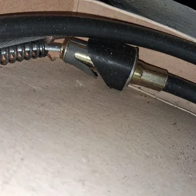
F109059
Fits 1980-1991 Ford E-250 Econoline · 1980-1991 Ford E-250 Econoline Club Wagon (1303 listed)
$16.99
View details
F109093
Fits 1984-1991 GMC Jimmy · 1984-1991 Chevrolet S10 (473 listed)
$15.99
View details
F109138
Fits 1983-1984 GMC C6000 · 1983-1984 Chevrolet C50 (34 listed)
$16.99
View details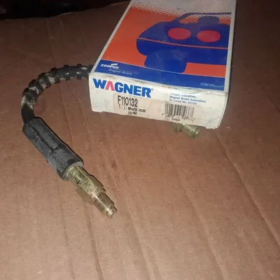
F110132
Fits 1983-1984 Ford Thunderbird (20 listed)
$12.99
View details
F110260
Fits 1978-1981 Buick Century · 1978-1987 Buick Regal (1974 listed)
$14.99
View details
F110420
Fits 1982-1994 Buick Century · 1984-1990 Chevrolet Celebrity (651 listed)
$14.99
View details
F110873
Fits 1983-1992 Ford Ranger · 1984-1990 Ford Bronco II (519 listed)
$14.99
View details
F112365
Fits 1986-1992 Ford Taurus · 1986-1992 Mercury Sable (155 listed)
$14.99
View details
F112409
Fits 1987-1994 Ford Ranger · 1986-1989 Ford Aerostar (295 listed)
$14.99
View details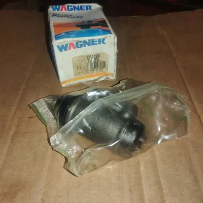
F113398
Fits 1994-2002 Honda Passport · 1989-1993 Isuzu Amigo (239 listed)
$14.99
View details
F120516
Fits 1988-1990 Chrysler Dynasty · 1990 Chrysler Imperial (31 listed)
$14.99
View details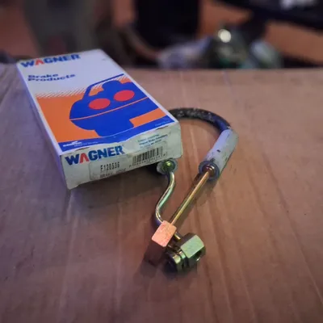
F120536
Fits 1989-1990 Ford Bronco II · 1989-1990 Ford Ranger (53 listed)
$21.99
View details
F120545
Fits 1985-1989 Subaru DL · 1985-1989 Subaru GL (95 listed)
$14.99
View details
F120889
Fits 1986-1991 Ford Ranger (220 listed)
$19.99
View details
MC101254
Fits 1970-1980 Pontiac Firebird · 1975-1978 AMC Matador (3000 listed)
$99.99
View details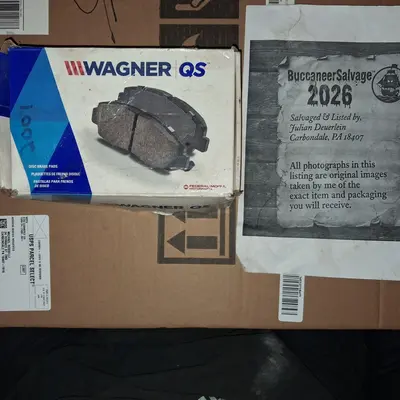
ZX603A
Fits 2005-2006 Chrysler Crossfire · 1992-1993 Mercedes-Benz 300SD (91 listed)
$40.99
View details
MKD466
Fits 1994-1997 Ford Aspire · 1991-1994 Ford Escort (124 listed)
$24.99
View details
NB723
Fits 2000-2004 Dodge Dakota · 1997-2001 Ford F-150 (335 listed)
$39.99
View details
R514
Fits 1978-1981 Buick Century · 1978-1987 Buick Regal (2492 listed)
$114.99
View details
YH140690
Fits 1997-2001 Ford F-150 (178 listed)
$97.99
View details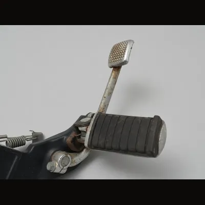
FJ1100
Fits 1984-1985 Yamaha FJ1100 · 1986-1993 Yamaha FJ1200 (10 listed)
FOR PARTS OR REBUILD · UNTESTED · NO RETURNS
$21.99
View details - for parts · no returns